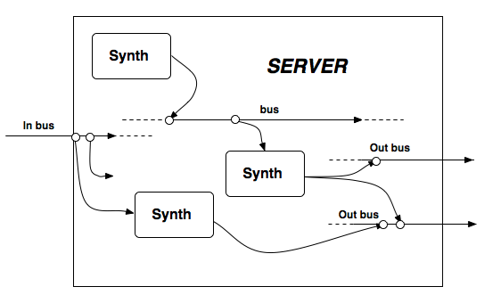

Orden de ejecución
Ver también: Server, Node, Group, default_group, Bus, Out, ReplaceOut, XOut, OffsetOut, In, InFeedback, LocalIn, LocalOut, SharedIn, SharedOut
El orden de ejecución es uno de los aspectos más críticos y aparentemente difíciles al utilizar SuperCollider pero, en realidad, hacer que funcione sólo toma un poco de reflexión durante las primeras etapas de planeación.
Orden de ejecución en este contexto no significa el orden en el que las instrucciones son ejecutadas en el lenguaje (el cliente). Se refiere al orden de los nodos sintetizadores en el servidor, el cual corresponde al orden en el que la señal de salida de los nodos sintetizadores es calculada durante cada ciclo de control ("blockSize"). Especifiques o no el orden de ejecución, cada sintetizador y cada grupo va en un lugar específico en la cadena de ejecución.
Si tienes en el servidor:
sintetizador 1 ---> sintetizador 2
... durante cada ciclo de control, todas las unidades generadoras del sintetizador 1 se ejecutarán antes que las del sintetizador 2.
Si no tienes ningún sintetizador que utilice In.ar, no tienes que preocuparte por el orden de ejecución. Sólo importa cuando un sintetizador está leyendo la señal de salida de otro sintetizador.
La regla es sencilla: si tienes un sintetizador en el servidor (i.e. un "efecto") que depedende de la salida de otro sintetizador (la "fuente"), el efecto debe aparecer después que la fuente en la cadena de nodos en el servidor.
fuente ---> efecto
Si tienes:
efecto ---> fuente
El sintetizador efecto no va a escuchar al sintetizador fuente y no obtendrás los resultados que quieres.
Abajo se muestra el diagrama de una típica configuración de servidor:

En el servidor, señales de audio externas pueden ser recibidas por los sintetizadores mediante los canales de entrada de audio "públicos" (uno en el caso representado), al mismo tiempo, los diferentes sintetizadores deben ser conectados a los canales de salida de audio "públicos" (dos en el caso representado) para enviar una señal de salida a la tarjeta de sonido (ver Bus). Los demás canales (tanto de audio como de control) son internos. En general, los canales pueden ser considerados semejantes a los envíos, canales o grupos de mezcla en una mesa de mezclas; o como tuberías que permiten a uno encauzar señales que "fluyen". Si un sintetizador está conectado a un canal en un punto específico ("fluyendo" a él), un sintetizador que tome la señal del mismo canal en un punto posterior tomará como señal de entrada a la señal que "fluye" (junto con cualquier otra señal previamente enviada a este canal), de la misma manera como ocurriría con una tubería de agua.
Algunas Notas sobre Servidores y Objetivos ("Targets")
Siempre hay un servidor (Server) por defecto, el cual puede ser accesado o establecido a través del método de clase Server.default. Al arrancar, el servidor local es establecido como el servidor por defecto, y también es asignado a la variable s del intérprete.
// ejecuta lo siguiente y observa la ventana "post"
s === Server.default;
s === Server.local;
Server.default = Server.internal; s === Server.default;
Server.default = Server.local; // regrésalo al servidor local
Cuando un servidor es arrancado, existe un grupo de nivel superior, con un ID de 0, el cual define la raíz del árbol de nodos. Este grupo está representado por la subclase RootNode de la clase Group. También hay un grupo por defecto (default_group), con un ID de 1. Este grupo es el grupo por defecto de todos los nodos. Este es el grupo que obtendrás si proporcionas un servidor como objetivo ("target"). Si no especificas un objetivo o envías nil, obtendrás el grupo por defecto del servidor por defecto.
El grupo por defecto cumple una importante función: provee un árbol de nodos básico y predecible para que métodos como Server:scope y Server:record no tengan problemas de orden de ejecución. En general, uno debe crear nodos dentro del grupo por defecto (default_group) en vez de en el nodo raíz (RootNode). Ver default_group y RootNode para más detalles.
Controlando el orden de ejecución
Hay tres maneras de controlar el orden de ejecución: utilizando el argumento "addAction" en tus mensajes de creación de sintetizadores, moviendo los nodos, y colocando tus sintetizadores en grupos. Utilizar grupos es opcional, pero es la forma más eficaz de organizar el orden de ejecución.
Acciones de agregado:
Al especificar un argumento addAction (acción de agregado) para Synth.new (o SynthDef.play, Function.play, etc.) uno puede especificar la posición del nodo en relación con el objetivo ("target"). El objetivo puede ser un nodo grupo, otro nodo sintetizador o un servidor.
Como se dijo anteriormente, el objetivo por defecto es el grupo por defecto (default_group, el grupo con el nodeID 1) del servidor por defecto.
Los siguientes símbolos son acciones de agregado válidas para Synth.new: \addToHead (añadir en la cabeza), \addToTail (añadir en la cola), \addBefore (añadir antes), \addAfter (añadir después), \addReplace (añadir remplazar).
Synth.new(defName, args, target, addAction)
si el objetivo es un servidor, resolverá al grupo por defecto de ese servidor
si el objetivo es nil, resolverá al grupo por defecto del servidor por defecto
Nota: un sintetizador no es un objetivo válido para las acciones de agregado \addToHead y \addToTail.
La clase Synth también cuenta con métodos de conveniencia para cada acción de agregado:
Synth.head(aGroup, defName, args)
agrega el nuevo sintetizador en la cabeza del grupo especificado por aGroup
si aGroup es un servidor, resolverá al grupo por defecto de ese servidor
si aGroup es nil, resolverá al grupo por defecto del servidor por defecto
Nota: un sintetizador no es un objetivo válido para el argumento aGroup
Synth.tail(aGroup, defName, args)
agrega el nuevo sintetizador en la cola del grupo especificado por aGroup
si aGroup es un servidor, resolverá al grupo por defecto de ese servidor
si aGroup es nil, resolverá al grupo por defecto del servidor por defecto
Nota: un sintetizador no es un objetivo válido para el argumento aGroup
Synth.before(aNode, defName, args)
agrega el nuevo nodo justo antes del nodo especificado por aNode.
Synth.after(aNode, defName, args)
agrega el nuevo nodo justo después del nodo especificado por aNode.
Synth.replace(synthToReplace, defName, args)
el nuevo nodo remplaza al nodo especificado por synthToReplace. El nodo del objetivo es liberado.
Utilzar Synth.new sin una acción de agregado resultará en la acción de agregado por defecto. (Puedes revisar los valores por defecto de los argumentos de cualquier método al ver el código fuente de sus clases. Ver Internal-Snooping para más detalles.) Cuando el orden de ejecución importa, es importante que especifiques una acción de agregado o que utilices uno de los métodos de conveniencia mencionandos arriba.
Moviendo nodos:
.moveBefore - mueve antes
.moveAfter - mueve después
.moveToHead - mueve a la cabeza
.moveToTail - mueve a la cola
Si necesitas cambiar el orden de ejecución después de que los sintetizadores y los grupos hayan sido creados, puedes hacerlo utilizando los mensajes de movimiento.
~efecto = Synth.tail(s, "efecto");
~fuente = Synth.tail(s, "fuente"); // el efecto no será escuchado porque está antes
~fuente.moveBefore(~efecto); // coloca la fuente antes que el efecto
Grupos
Los grupos pueden ser cambiados de posición de la misma forma que los sintetizadores. Cuandos mueves un grupo, todos los sintetizadores en este grupo se mueven con él. Es por esto que los grupos son una herramienta importante para controlar el orden de ejecución. (Ver el archivo de ayuda de Group para más detalles acerca de este y otros aspectos convenientes de los grupos.)
Grupo 1 ---> Grupo 2
En la configuración anterior, todos los sintetizadores en el Grupo 1 van a ser ejecutados antes que todos los sintetizadores en el Grupo 2. Esta es una forma muy fácil de hacer que el orden de ejecución suceda de la manera que quieres.
Determina tu arquitectura, luego crea grupos que sostengan la arquitectura.
Usando el orden de ejecución en tu favor
Antes de que empieces a programar, planea lo que quieres hacer y decide dónde necesitan ir los sintetizadores.
Una configuración común es tener a una rutina tocando nodos, los cuales necesitan ser procesados por un solo efecto. Además, quieres que este efecto esté separado de otras cosas que estén corriendo al mismo tiempo. Para estar seguro, debes colocar la cadena sintetizador -> efecto en un canal de audio privado y después transferirla a la salida principal.
[ Muchos sintetizadores ] ----> efecto ----> transferencia
Este es un lugar perfecto para utilizar un grupo:
Grupo ([ Muchos sintetizadores ]) ----> efecto ----> transferencia
Para hacer la estructura más clara en el código, uno puede también crear un grupo para el efecto (incluso si sólo hay un sintetizador en él):
Grupo ( [ Muchos sintetizadores] ) ----> Grupo ([ efecto ] ) ----> transferencia
Voy a complicar el ejemplo al modular un parámetro (duración de nota) utilizando un sintetizador a velocidad de control.
Entonces, al principio de tu programa:
s.boot;
(
l = Bus.control(s, 1); // obtén un canal de control para el oscilador a baja frecuencia (LFO)
// --no es relevante para el orden de ejecución--
b = Bus.audio(s, 2); // asumiendo estéreo--esto es para mantener la cadena fuente->efecto
// separada de otras cadenas similares
~grupoSintetizador = Group.tail(s);
~grupoEfecto = Group.tail(s);
// ahora tienes grupoSintetizador --> grupoEfecto dentro del grupo por defecto de s
// crea algunos SynthDefs
SynthDef("orden-de-ejecucion-distorsion", { arg bus, preGain, postGain;
var sig;
sig = In.ar(bus, 2);
sig = (sig * preGain).distort;
ReplaceOut.ar(bus, sig * postGain);
}).send(s);
SynthDef("orden-de-ejecucion-cuadrada", { arg freq, bus, ffreq, pan, lfobus;
var sig, noteLen;
noteLen = In.kr(lfobus, 1);
sig = RLPF.ar(Pulse.ar(freq, 0.2, 0.5), ffreq, 0.3);
Out.ar(bus, Pan2.ar(sig, pan)
* EnvGen.kr(Env.perc(0.1, 1), timeScale: noteLen, doneAction: 2));
}).send(s);
SynthDef("LFNoise1", { arg freq, mul, add, bus;
Out.kr(bus, LFNoise1.kr(freq, mul:mul, add:add));
}).send(s);
)
// coloca el oscilador a baja frecuencia:
~lfo = Synth.head(s, "LFNoise1", [\freq, 0.3, \mul, 0.68, \add, 0.7, \bus, l]);
// luego coloca tu efecto:
~dist = Synth.tail(~grupoEfecto, "orden-de-ejecucion-distorsion", [\bus, b, \preGain, 8, \postGain, 0.6]);
// transfiere los resultados a la salida principal, con el sintetizador que modifica el nivel de
// amplitud de la señal tocando en la cola del grupo por defecto de s (¡toma en cuenta que
// Function-play también recibe acciones de agregado!)
~transferencia = { Out.ar(0, 0.25 * In.ar(b, 2)) }.play(s, addAction: \addToTail);
// E inicia tu rutina:
(
r = Routine({
{
Synth.tail(~grupoSintetizador, "orden-de-ejecucion-cuadrada",
[\freq, rrand(200, 800), \ffreq, rrand(1000, 15000), \pan, 1.0.rand2,
\bus, b, \lfobus, l]);
0.07.wait;
}.loop;
}).play(SystemClock);
)
~dist.run(false); // demuestra que el efecto de distorsión está haciendo algo
~dist.run(true);
// para limpiar:
(
r.stop;
[~grupoSintetizador, ~grupoEfecto, b, l, ~lfo, ~transferencia].do({ arg x; x.free });
currentEnvironment.clear; // borra todas las variables de ambiente
)
Toma nota de que en la rutina, utilizar un grupo para los sintetizadores fuente permite que su orden sea especificado fácilmente en relación con sí mismos (son añadidos con el método .tail), sin preocuparnos de su orden en relación con el sintetizador efecto.
Toma nota de de que esta disposición previene errores de orden de ejecución, a través del uso de una pequeña cantidad de código organizacional. Aunque simple en este caso, esta disposición podría ser fácilmente adaptada a un proyecto más grande.
Estilo Envío de Mensajes
Los ejemplos anteriores están en "estilo objeto". Si prefirieras trabajar en "estilo envío de mensajes", existen los mensajes correspondientes a todos los métodos mencionados anteriormente. Ver NodeMessaging y Server-Command-Reference para más detalles.
Retroalimentación
Cuando los diversos tipos de UGens de salida (Out, OffsetOut, XOut) escriben datos a un canal, los mezclan con los demás datos del ciclo actual, pero sobreescriben cualquier dato del ciclo anterior. (ReplaceOut siempre sobreescribe todos los datos.) De esta manera, dependiendo del orden de los nodos, los datos en un determinado canal pueden ser del ciclo actual o ser del ciclo anterior. En el caso de los UGens de entrada (ver In e InFeedback), In.ar revisa la fecha de todos los datos que lee y convierte a ceros todos los datos del ciclo anterior (para su uso dentro de ese sintetizador; los datos permanece en el canal). Esto está bien para datos de audio, ya que evita la retroalimentación, pero para datos de control es útil el poder leer datos de cualquier lugar del orden de los nodos. Por esta razón, In.kr también lee datos anteriores al ciclo actual.
En algunos casos, también podríamos querer leer el audio de un nodo que se encuentre después (más hacia la cola) en el orden de nodos actual. Esta es la función de InFeedback. El retraso introducido por este UGen tiene una duración máxima de un bloque de control, equivalente a aproximadamente 0.0014 segundos (con el tamaño de bloque y la frecuencia de muestreo por defecto).
El comportamiento variable de mezcla y sobreescritura de los UGens de salida puede hacer que el orden de ejecución sea crucial al utilizar In.kr o InFeedback.ar. Por ejemplo, con un orden de nodos como el siguiente, el UGen InFeedback en el Sintetizador 2 sólo recibirá datos del Sintetizador 1 (-> = escribe salida; <- = lee entrada):
Sintetizador 1 -> Canal A // este sintetizador sobreescribe la salida del Sintetizador 3 antes de que llegue al Sintetizador 2
Sintetizador 2 (con InFeedback) <- Canal A
Sintetizador 3 -> Canal A
Si el Sintetizador 1 fuera movido después del Sintetizador 2, entonces el InFeedback del Sintetizador 2 recibiría una mezcla de la salida de los Sintetizadores 1 y 3. Esto también sería así si el Sintetizador 2 viniese después de los Sintetizadores 1 y 3. En ambos casos, los datos de los Sintetizadores 1 y 3 tendrían la misma fecha (ya sea la actual o la del ciclo anterior), por lo que nada sería sobreescrito.
(De la misma manera, si algún In.ar escribió al Canal A antes en el orden de nodos que el Sintetizador 2, convertiría a ceros los datos en el canal antes de que los datos del Sintetizador 3 alcanzasen al Sintetizador 2. Esto sería así incluso si no hubiera ningún nodo escribiendo en al Canal A antes que el Sintetizador 2.)
Debido a esto, muchas veces es útil asignar un canal separado para retroalimentación. Con la siguiente disposición, el Sintetizador 2 recibirá datos del Sintetizador 3 a pesar de la posición del Sintetizador 1 en el orden de nodos.
Sintetizador 1 -> Canal A
Sintetizador 2 (con InFeedback) <- Canal B
Sintetizador 3 -> Canal B + Canal A
El siguiente ejemplo demuestra este punto con In.kr:
(
SynthDef("ayuda-FreqEntrada", { arg bus;
Out.ar(0, FSinOsc.ar(In.kr(bus), 0, 0.5));
}).send(s);
SynthDef("ayuda-FreqSalida", { arg freq = 400, bus;
Out.kr(bus, SinOsc.kr(1, 0, freq/40, freq));
}).send(s);
b = Bus.control(s,1);
)
// añade el primer sintetizador de control en la cola del servidor por defecto; sin audio todavía
x = Synth.tail(s, "ayuda-FreqSalida", [\bus, b]);
// añade el sintetizador que produce audio ANTES del sintetizador anterior; recibe los datos de x del ciclo anterior
y = Synth.before(x, "ayuda-FreqEntrada", [\bus, b]);
// añade otro sintetizador de control antes de y, en la cabeza del servidor
// este sintetizador ahora sobreescribe los datos del ciclo anterior de x antes de que y los reciba
z = Synth.head(s, "ayuda-FreqSalida", [\bus, b, \freq, 8000]);
// obtén otro canal
c = Bus.control(s, 1);
// ahora y recibe los datos de x a pesar de que z todavía está ahí
y.set(\bus, c); x.set(\bus, c);
x.free; y.free; z.free;